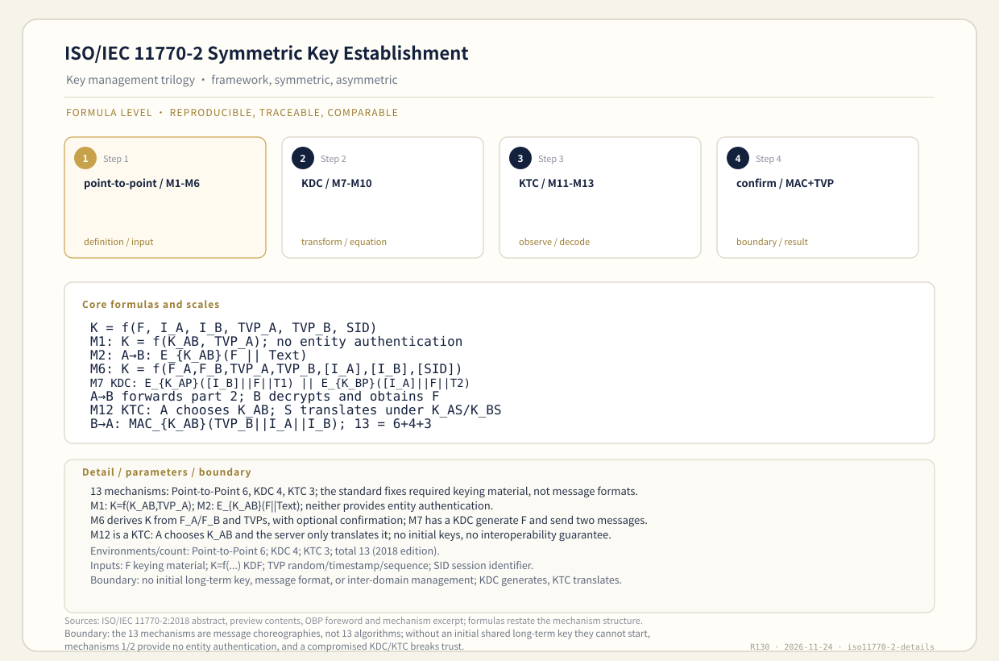
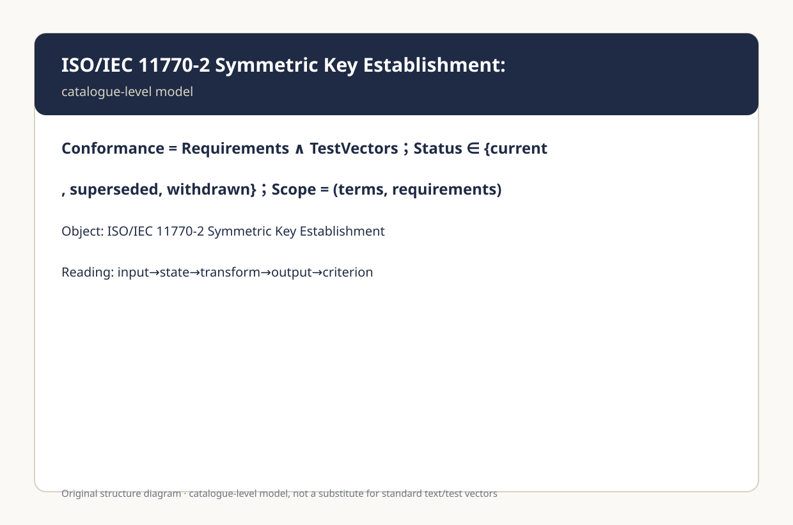

Principles
Standard: Key management — Part 2: Mechanisms using symmetric techniques (对称技术密钥管理). ISO/IEC 11770-2:2018 divides symmetric key establishment into three environments: six Point-to-Point mechanisms, four KDC mechanisms and three KTC mechanisms, 13 in total. It specifies only the keying material and conditions that messages must carry; message formats, error messages, initial key establishment, inter-domain management and implementation compatibility are outside its scope. The general form is K=f(F,I_A,I_B,TVP_A,TVP_B,SID): F is keying material, I are entity identifiers, TVP is a random number, timestamp or sequence number, SID is a session identifier, and f is a KDF. Mechanism 1 derives from TVP only; mechanism 2 has A choose F and encrypt it under an existing K_AB; neither provides entity authentication. Mechanism 6 derives K from F_A and F_B plus TVPs, optionally with I_A, I_B, Text and SID, and uses random numbers for key confirmation. Mechanism 7 has a KDC generate or acquire F and encrypt two messages under A's and B's long-term keys with the KDC; A forwards the second part to B. Mechanism 12 is a KTC: A chooses K_AB and the server only translates it into a package B can open; the server does not generate the key. Key confirmation is not a synonym for entity authentication: it proves possession of the same K, while entity authentication also proves that the peer is the claimed entity, usually through a signature or an additional protocol.

Why it matters
The formula-level value of Part 2 is separating “who chooses the key, who sees it, and who confirms it”. Point-to-Point suits parties that already share a long-term key; a KDC suits central distribution but the centre knows the key; a KTC suits a case where one party controls the key and the centre only translates it. Their trust assumptions differ and cannot be hidden under one “key distribution” label.
The 13 mechanisms are not 13 algorithms; they are message choreographies. KDF choice, TVP freshness, direction of key confirmation and SID binding determine whether the protocol resists replay, reflection and unknown-key sharing.
That is why the formula includes I_A, I_B and SID: without identity and session binding, keys can repeat across sessions; without TVP binding, replay can pass.
Applications
Selection order: first ask whether the parties already share a long-term key. If yes, use Point-to-Point; if a centre is required, use KDC; if one party must keep control of the key, use KTC. Then choose a KDF: ISO/IEC 11770-6 or a mature HKDF/KDF, with identities, random numbers, SID and purpose labels as input.
Messages should bind at least protocol version or mechanism identifier, initiator and responder identities, TVP and key purpose. Key confirmation should use a binding such as MAC_{K_AB}(TVP_B||I_A||I_B), not a bare “OK”.
Engineering checks: is the long-term key pre-shared and non-reused; is each TVP unique; are KDC/KTC inside the trust boundary; is confirmation mutual; do error messages leak key state; are MAC and encryption keys separated.
A shared name may belong to an algorithm, standard, event, person or term; this entry is responsible only for its catalogue binding and does not absorb adjacent records. If versions, regions or institutions define the name differently, the differences stay side by side.

Limits & attacks
The standard does not establish an initial long-term key; without initial trust every mechanism stalls. Mechanisms 1 and 2 have no entity authentication and are exposed to man-in-the-middle and replay; a compromised KDC exposes all derived keys; a KTC may see or replace keying material.
TVP reuse, insufficient KDF input, missing key confirmation, unbound SID, or using one key for both encryption and MAC all break security. Product compliance is not product interoperability; message formats are out of scope.
It also does not handle cross-domain key management, key life cycle or implementation side channels; see Part 1, Part 7 and implementation standards.
History
The first edition appeared in 1996; the second edition in 2008 was a technical revision that changed mechanism 12 to address a security shortcoming; the third edition in 2018 updated Clause 5 requirements, added an optional message/mechanism identifier to encrypted strings, expanded the key-calculation inputs of mechanism 5, made minor changes to the fourth message of mechanism 8 and the second message of mechanism 10, and was confirmed in 2024.
Worked example & verification
Formal model and reproduction steps
[S=\min_i S_i,\quad S_i\in{\text{密钥强度},\text{分组安全},\text{实现安全}}]
Key management — Part 2: Mechanisms using symmetric techniques: the registered public parameters, key material or randomness, and message are mapped through the stated transformation to an output checked against the registered criterion. The worked example is a structural reproduction, not a new test vector; parameter ranges, standard versions and implementation details remain source-bound.
References
- Wikipedia search entry for 对称技术密钥管理. https://zh.wikipedia.org/w/index.php?search=%E5%AF%B9%E7%A7%B0%E6%8A%80%E6%9C%AF%E5%AF%86%E9%92%A5%E7%AE%A1%E7%90%86
- Handbook of Applied Cryptography (Menezes, van Oorschot, Vanstone). https://www.cacr.math.uwaterloo.ca/hac/